A terrain tool in C++ that generates landscapes, lets you sculpt them with a brush, and erodes them with a particle-based hydraulic erosion simulation. I built it solo in eight weeks on the school's in-house engine, with a strong focus on profiling and multithreading.
Overview
This is a terrain tool for level designers, built inside the school's engine. Making a landscape with it takes four steps:
Because a designer uses all of this interactively, every step has to stay fast as the terrain grows. That is where most of my time went, so profiling and optimising is the biggest section of this page.
The erosion is based on a paper by Hans Theobald Beyer. After comparing grid-based and particle-based methods, I went with particles:
each droplet follows the slope of the terrain, picks up sediment while it speeds up downhill, and drops it again when it slows down,
goes uphill or evaporates. Its cost depends on the number of droplets rather than the size of the map, which keeps it scalable.
The paper leaves out some steps, and the algorithm easily runs into undefined values,
so I filled in the gaps and added safeguards, such as giving a droplet a random direction when it ends up on perfectly flat ground.
Every setting is exposed in the editor, so you can tune the erosion and run it all at once or one step at a time.
Performance
To find the bottlenecks, I made them impossible to miss: a 10 by 10 unit terrain subdivided into 10,000 by 10,000 vertices, 100 million in total and far more than anyone would really use. I profiled it with Superluminal and changed one thing at a time, profiling again after every change. All the numbers below are from those profiles.
Generating a terrain happens in five steps: fill the heightmap with noise, build the vertex positions and triangle indices, calculate a normal for every vertex from the heightmap, smooth those normals, and upload everything to the GPU.
1. The baseline: 18.3 seconds. Three quarters of the time went into generating the heightmap, and most of that was spent inside GLM's Perlin noise function.
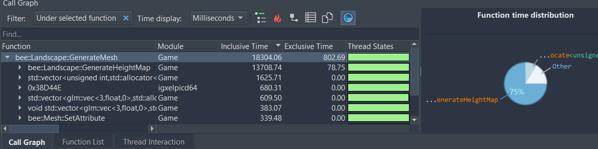
2. A wrong assumption: 22 seconds. Since GLM is a library I couldn't change, I swapped in my own Perlin noise implementation, assuming it would be faster. It turned out to be slower. However, I kept it anyway, because it gave me more control over octaves, persistence and the seed. But, it was a good reminder to measure before assuming. From here on, 22 seconds is the number to beat.
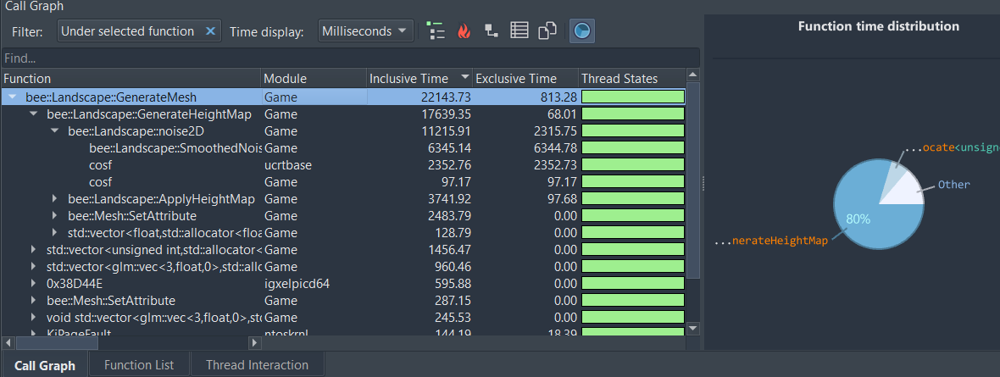
3. Splitting the heightmap over threads: 13.7 seconds. Every height only depends on its own coordinates,
so the heightmap can be filled in any order, on any thread. I was using the BUAS educational engine which
has a thread pool with four worker threads inside it.
You queue a job and get a std::future back to wait on. I made every row of the heightmap a job,
which brought the heightmap generation down from 17.6 to 10.1 seconds.
But the timeline showed something else. The main thread was blocked for about three seconds, shown in red,
doing nothing while it waited for the workers to finish.
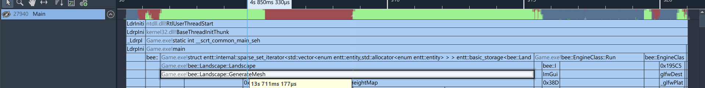
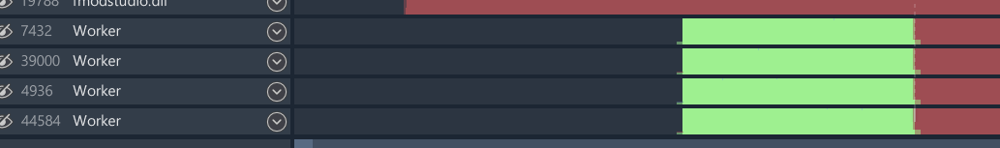
4. Giving the main thread something to do: 9.9 seconds. At the Graphics Programming Conference I had seen a talk about occupancy.
Which showed me that to make the code efficient it's important to keep every thread busy, instead of just adding more of them.
Building the vertex positions and triangle indices doesn't need the heights at all.
So I reordered the work. I Queued the heightmap jobs first, then let the main thread build the mesh while the workers fill in the heights,
and only wait at the moment the heights are applied to the mesh. The red gap disappeared.
// landscape_components.h
std::vector<std::future<void>> futures; // one future per heightmap row job
// landscape_components.cpp
void Landscape::PerlinMesh()
{
heightMap.resize(pointsLength * pointsWidth);
erosionRateMap->resize(pointsLength * pointsWidth);
mSeed = rand();
auto& pool = Engine.ThreadPool();
futures.clear();
futures.reserve(pointsLength);
// create the vertices
for (int y = 0; y < pointsLength; y++)
{
futures.push_back(pool.Enqueue(&Landscape::PerlinJob, this, y));
}
}
void Landscape::GenerateMesh()
{
GenerateHeightMap();
// ... meanwhile, build every vertex position and index on the main thread
mMesh->SetIndices(indices);
for (auto& future : futures)
{
future.get();
}
futures.clear();
// ...
ApplyHeightMap(0, 0, pointsWidth, pointsLength); // update the entire heightmap
}landscape_components.h / landscape_components.cpp (shortened)
landscape_components.cpp (shortened)
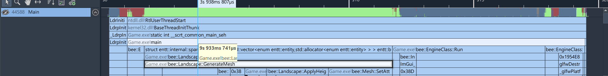
5. Smoothing normals in parallel: about 9 seconds. Smoothing was now one of the biggest costs left.
Every smoothed normal is the average of the normals around it, which are only being read not changed, so rows can safely be smoothed in parallel too.
What remains is mostly uploading the mesh to the GPU and allocating vectors, which more threads can't fix.
That is two and a half times faster than where I started with my own noise. At a more realistic million vertices,
a terrain now generates almost instantly.
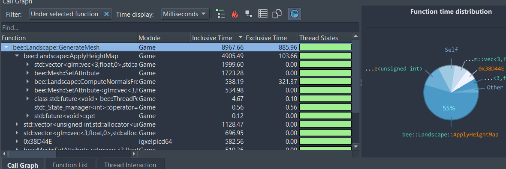
At this size, a single click with the brush took 4.6 seconds, because the click ray is tested against every triangle. I split the triangles into five ranges: four go to the worker threads as jobs, and the main thread checks the fifth itself instead of waiting. Every job writes to its own result slot, so no locking is needed, and afterwards the closest hit wins. The intersection test went from 2.9 seconds to 0.7.
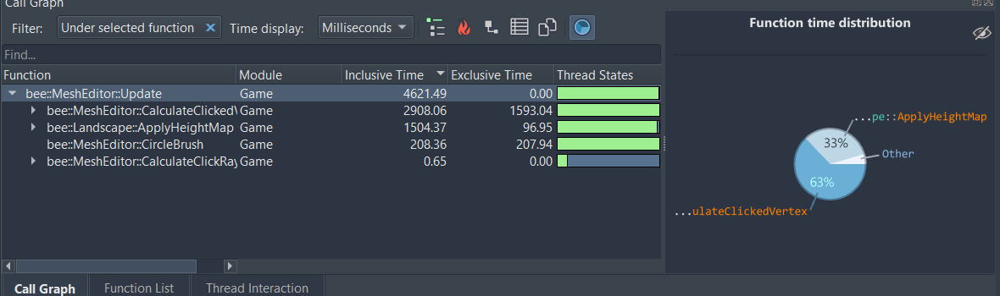
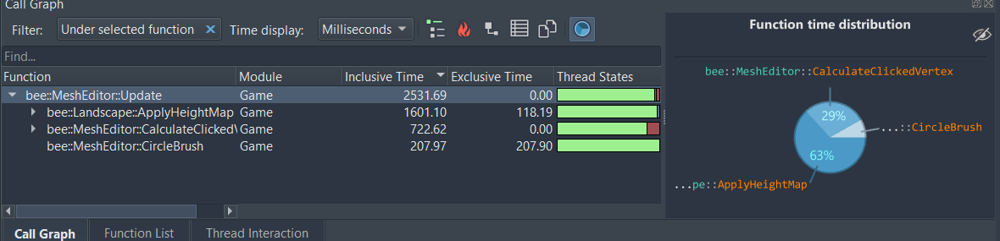
int splitWorkload = static_cast<int>(floor(landscape.indices.size() / 3 / 5)); // i will go through the list on 5 threads. Each thread uses 3 indices(1 triangle) at a time
auto& pool = Engine.ThreadPool();
intersectResults.resize(5);
for (int i = 0; i < 4; i++)
{
futures.push_back(pool.Enqueue(&MeshEditor::CalculateClickedJob, this,
i,
i * splitWorkload,
((i + 1) * splitWorkload),
clickRay,
std::ref(landscape),
std::ref(landscapeTransform)));
}
CalculateClickedJob(4, 4 * splitWorkload, static_cast<int>(landscape.indices.size()/3), clickRay, landscape, landscapeTransform);
for (auto& future : futures)
{
future.get();
}
for (auto& intersectResult : intersectResults)
{
if (intersectResult.smallestT < result.smallestT)
{
result = intersectResult;
}
}MeshEditor::CalculateClickedVertex() — MeshEditor.cpp (shortened)
Someone in my weekly meeting then suggested only recalculating the normals around the edit instead of the whole mesh. I implemented it, but it barely helped: the real cost was uploading the changed vertices to the GPU, which the profiler could have told me beforehand. Lesson learned again: check the profiler before acting on an assumption, including other people's.The erosion can't be split over threads like the terrain because every droplet changes the heightmap, and that changes the path of the droplets after it. So here the gains had to come from doing less work per droplet. Stress testing with 100,000 droplets showed that more than half of the time went to memcpy. Every droplet that left the map or evaporated was erased from the middle of the droplet vector, which shifts every droplet after it one slot forward: O(n) for every removal. Copying the last droplet into the empty slot and popping the back makes a removal O(1). The erosion step also filled a vector without sizing it first, even though the size was known, so I resized it up front. Together that took a simulation run from 7.9 seconds to 1.8, with no memcpy left in the profile.
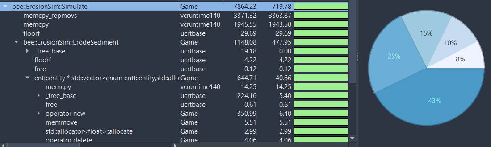
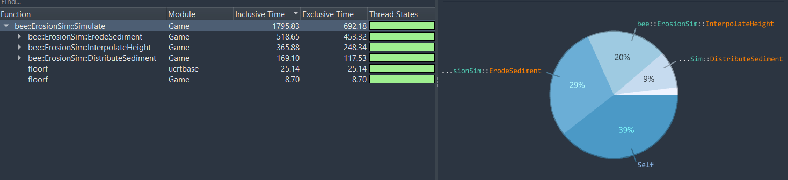
if (particle.lifeTime > maxLifeTime || pos00.x < 0 || pos00.y < 0 || pos11.x >= mpLandscape->pointsWidth ||
pos11.y >= mpLandscape->pointsLength)
{
// if the particle is out of bounds or has lived too long, remove it.
lostSediment += particle.sediment;
particles[i] = particles.back();
particles.pop_back();
continue;
}ErosionSim::Simulate() — ErosionSim.cpp (shortened)
Finally I measured how each setting scales, averaging five runs per value. Simulation time grows linearly with the number of droplets, from 17 ms for 1,000 droplets to 1.8 seconds for 100,000. It grows quadratically with the erosion radius, since every erosion step touches a square of cells around the droplet. A longer droplet lifetime costs less and less, because most droplets have already left the map or evaporated. The map size barely matters at all: the cost follows the droplets, not the terrain.
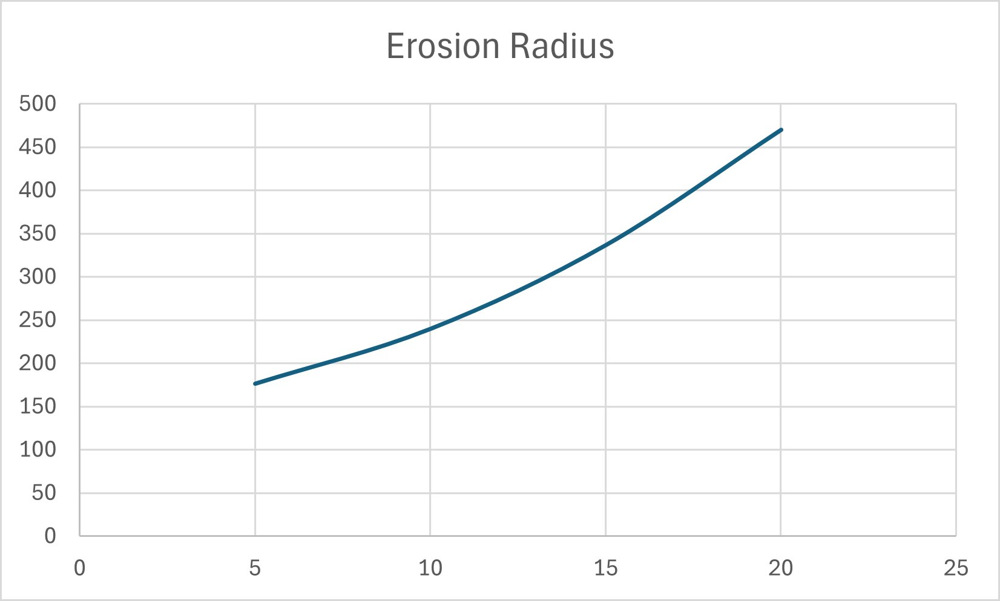
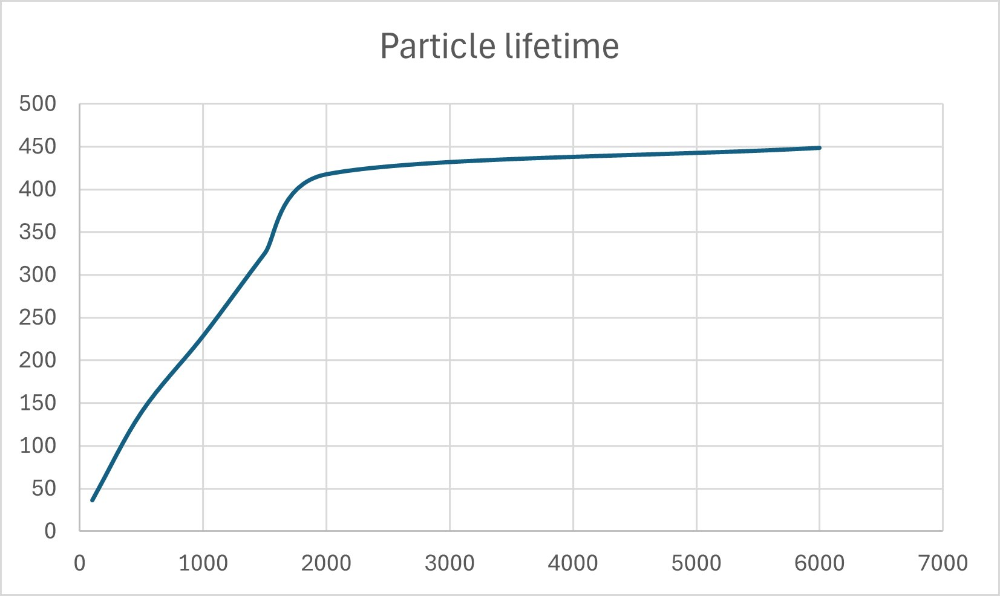
The jobs were too small. One job per row means 10,000 jobs at this size, each going through the thread pool's queue. Splitting the rows into a few large blocks per thread would have made the system even faster.
Tools · Terrain editing
The whole tool lives in the engine's ECS: a landscape component holds the terrain and its heightmap, and separate systems handle the brush and the erosion. I kept it modular on purpose, so it could be dropped into another project later. The terrain type, size, resolution and look can all be changed from ImGui panels in the editor.
The heightmap is kept separate from the mesh, and applying it only updates the area that changed. My first normals averaged the faces around each vertex, which was complex and not very accurate. After researching the alternatives, and a tip in a one-on-one, I switched to calculating them straight from the four neighbouring heights, which is simpler and faster for a grid. Smoothed normals can be switched on and off.
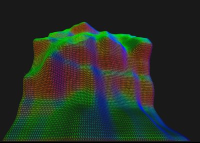
To paint on the terrain, the brush needs to know which vertex you clicked. I compared rendering object IDs to a separate buffer
with ray tracing, and chose ray tracing because it gives an exact position.
The click becomes a ray from the camera through the mouse position, using the inverse projection and view matrices.
For each triangle, I first intersect the ray with the triangle's plane, and then check with barycentric coordinates whether the hit is inside it.
Those same coordinates also tell me which corner the hit is closest to, which is the vertex the brush paints around.
The brush raises or lowers the terrain in a circle that fades out towards the edge. You can hold the mouse to keep painting,
use the right button to lower, and middle-click a vertex to print its position and normal.
//subtriangle area divided by the total triangle area
float u = (dot11 * dot02 - dot01 * dot12) * invTriangleArea;
float v = (dot00 * dot12 - dot01 * dot02) * invTriangleArea;
float w = 1.0f - u - v;
if ((u < 0.0f) || (v < 0.0f) || (w < 0.0f) ) {
return noIntersect; //the point is not inside the triangle.
}
if (u >= v && u >= w)
{
return a; // Closest to a
}
else if (v >= u && v >= w)
{
return b; // Closest to b
}
else
{
return c; // Closest to c
}MeshEditor::CheckPointInTriangle() — MeshEditor.cpp (shortened)
Every triangle doesn't need testing. Because the terrain is a regular grid, the click ray could step through only the grid cells it passes over,
and test just the two triangles in each of them. That would have made the click almost free without any threads, or a BVH.
The brush ignores the terrain's rotation. The click test only adds the terrain's position, so a rotated terrain is painted in the wrong place.
Transforming the ray into the terrain's local space instead would fix that. I was aware of this limitation at the time but decided to put more effort into the simulation instead, which was the main goal of the project.
Rendering · Texturing
Texturing started as a stretch goal and made it in at the end. The terrain blends grass, rock and snow based on steepness and height, with adjustable thresholds and blend zones. The textures reach the shader as one 2D texture array, which I chose over a texture atlas because it is easier to change later, and over bindless textures, which would have been overkill. Tri-planar sampling keeps the textures from stretching on steep slopes. To keep everything modular, the terrain has its own renderer component instead of changing the engine's mesh renderer. Getting the data to the shader was the hardest part, and RenderDoc is what finally got me through it.
vec4 TriPlanarSampling(vec3 pos, vec3 v_normal, float textureLayer){
//sample each plane
vec4 dx = texture(s_landscape_base_color, vec3(pos.zy / textureSize, textureLayer));
vec4 dy = texture(s_landscape_base_color, vec3(pos.xz / textureSize, textureLayer));
vec4 dz = texture(s_landscape_base_color, vec3(pos.xy / textureSize, textureLayer));
//weight based on the normal of the fragment
vec3 weights = abs(v_normal.xyz);
weights = weights + 0.001f; //Add small bias to avoid artifacts on cardinal directions
weights = weights / (weights.x + weights.y + weights.z);
//return the weighted sum
return (dx * weights.x) + (dy * weights.y) + (dz * weights.z);
}landscape_blending.frag
I also added debug views for the simulation. The most useful one counts how often droplets visited every vertex and normalises it, which shows exactly where the water flowed: the places where creeks and rivers would form. In the future, that same data could be used to actually carve rivers and lakes into the terrain.
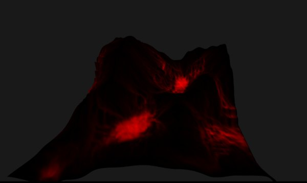
Reflection
Twice in this project an obvious-sounding optimisation did nothing: my own Perlin noise was slower than GLM's, and recalculating fewer normals didn't help because the GPU upload was the real cost. Both times the profiler had the answer before I wrote a line of code.
Moving work to other threads only helps if no thread ends up waiting. Splitting the heightmap over threads was only half the story: reordering the work so the main thread had something useful to do while the workers ran saved almost four more seconds, without adding a single thread.
Early on I asked my study group whether to weave the tool into the engine or keep it separate, and they told me to keep it modular. Building it as its own components and systems, including its own renderer, made later changes like texturing much easier, and kept the tool usable in other projects.